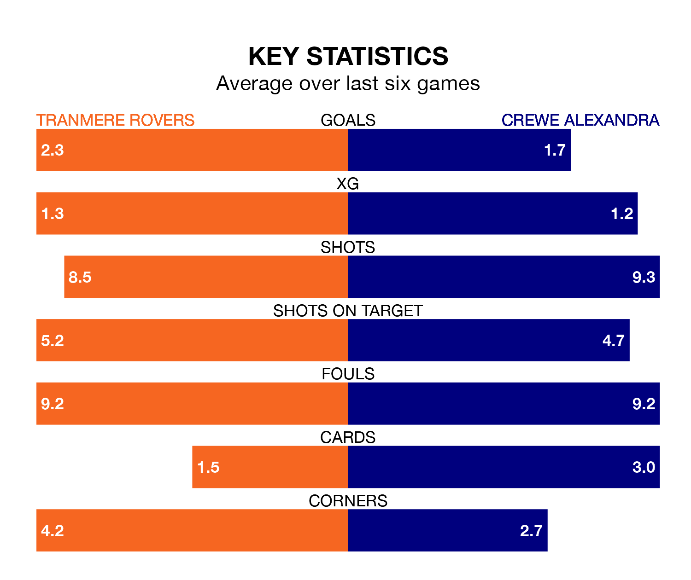

Crewe Alexandra travel to Tranmere Rovers on Saturday in EFL League Two.
The visitors come into the game on the back of a defeat in their last match, having lost to Salford City 3-2 at home, with goals from Aaron Rowe and Elliot Nevitt.
Tranmere, meanwhile, won their last match, 2-1 against Grimsby Town, with their goals scored by Tobias Mullarkey and Robert Apter.
With 55 goals in 29 games so far this season, Crewe are the league's third-highest scorers with 1.9 goals per game. And they are conceding at an average rate, letting in 44 goals at a rate of 1.5 per game.
Tranmere are also above average scorers, with 1.6 goals per game, compared to a league average of 1.5. They have conceded 1.5 goals per game.
In the last 10 years, Tranmere and Crewe have played each other on seven occasions. Tranmere won three of them and Crewe four.
On average, Tranmere scored 1.4 goals and the Railwaymen 1.4 in those matches.
Their last meeting was on October 14, when Crewe won 2-0 at home.
The Railwaymen are fifth in the table after 29 games, of which they have won 14 and drawn eight, earning 50 points.
Rovers are 12 places behind the away team in 17th, with 11 wins and three draws putting them on 36 points.
The hosts are in reasonable form in EFL League Two, with four wins and two losses from their last six games.
With four wins and a draw over that period, Crewe's form is slightly better – they have taken 13 points from 18, compared to Tranmere's 12.
Saturday's match will be refereed by Carl Brook, who has taken charge of six EFL League Two games so far this season, issuing no red cards and booking 28 players. He has not awarded any penalties.
He is yet to oversee a match featuring either Tranmere or Crewe this season.
Updated: 10:40 (UTC), 01/02/24